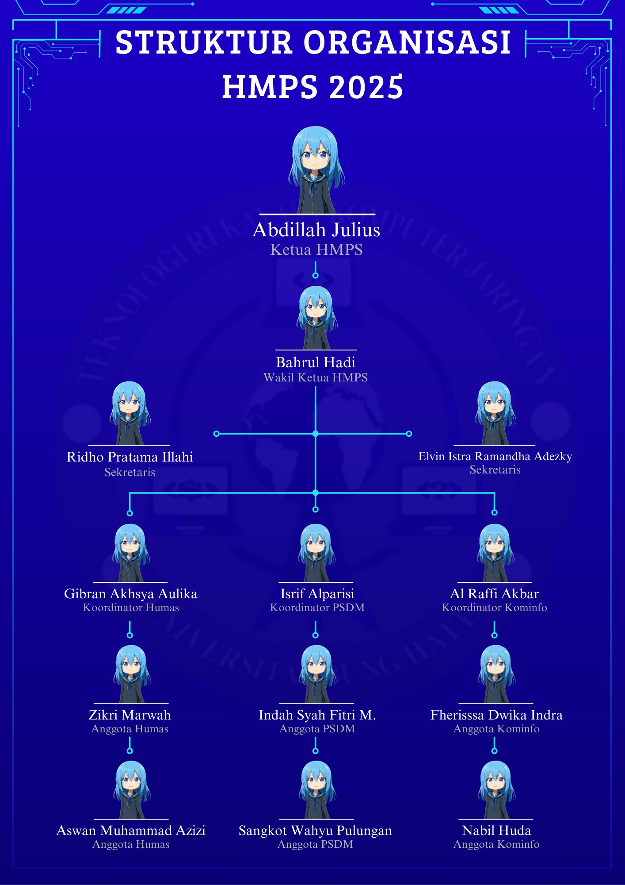

Struktur Himpunan Mahasiswa

Klik gambar untuk memperbesar
Pimpinan Himpunan
Ketua Himpunan
Muhammad Arif Hidayat
Wakil Ketua
Sari Dewi Lestari
Sekretaris
Ahmad Fauzi Rahman
Bendahara
Rina Kartika Sari
Departemen
Kepala Dept. Akademik
Dedi Kurniawan
Kepala Dept. Minat & Bakat
Maya Anggraini
Kepala Dept. Kewirausahaan
Rizki Pratama
Kepala Dept. Hubungan Luar
Fitri Handayani
Tim Koordinator
Koordinator Acara
Budi Santoso
Koordinator Media
Lina Marlina
Koordinator Dana & Usaha
Agus Setiawan
Koordinator Hubmas
Dewi Sartika